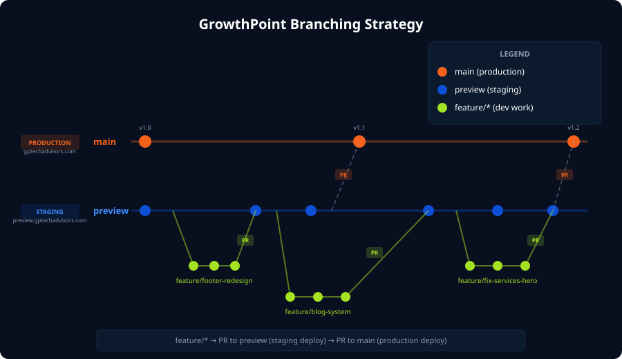

For the GrowthPoint Website team — Maddox, Josh, and Stacey
We use a three-tier branching model. All work flows in one direction: from feature branches, through staging, to production.

| Branch | Purpose | Deploys To |
|---|---|---|
main |
Production-ready code. Only updated via PR from preview. |
gptechadvisors.com |
preview |
Staging/integration branch. All feature work merges here first. | preview.gptechadvisors.com |
feature/* |
Your working branch for a specific task. Created from preview. |
Local only (until PR is merged) |
feature/* → PR to preview → verify on staging site → PR to main → live on production
main or preview.
All changes go through pull requests. This protects the live site and gives the team a chance to review.
If you haven't cloned the repo yet:
# Clone the repository
git clone https://github.com/GrowthPointTech/gp-website.git
# Move into the project directory
cd gp-website
# Switch to the preview branch (our main working branch)
git checkout preview
# Install dependencies (Puppeteer for style comparison tools)
npm installEvery time you sit down to work, start with a fresh pull:
# Make sure you're on preview
git checkout preview
# Pull the latest changes from the remote
git pull origin preview
# Now create your feature branch (or switch to an existing one)
git checkout -b feature/your-feature-namefeature/ followed by a short, descriptive name with hyphens. If there's a Jira ticket, prefix it.feature/fix-services-hero, feature/blog-system, feature/JIRA-42-contact-form
If your branch has fallen behind preview (for example, someone else's PR got merged while you were working), you need to pull in those changes.
# From your feature branch:
git fetch origin
git merge origin/preview
# If there are conflicts, Git will tell you which files.
# Fix them, then:
git add .
git commit# From your feature branch:
git fetch origin
git rebase origin/preview
# If there are conflicts, fix them, then:
git add .
git rebase --continueHere's the full lifecycle of a feature branch:
1 Create the branch from an up-to-date preview:
git checkout preview
git pull origin preview
git checkout -b feature/my-new-feature2 Make your changes. Commit often with clear messages:
# Stage specific files (preferred over "git add .")
git add css/pages.css services.html
# Commit with a descriptive message
git commit -m "fix: match services hero padding to live site"Or simply: /commit — Claude will look at your changes and write an appropriate commit message.
3 Push your branch to GitHub:
# First push (sets up tracking)
git push -u origin feature/my-new-feature
# Subsequent pushes
git push4 Create a Pull Request on GitHub (see next section).
5 After the PR is merged, clean up:
git checkout preview
git pull origin preview
git branch -d feature/my-new-featureA Pull Request (PR) is how you propose merging your feature branch into preview. It gives the team a chance to review your changes before they go live on staging.
# Make sure all your changes are committed and pushed
git push -u origin feature/my-new-feature
# Create the PR targeting preview
gh pr create --base preview \
--title "feat: add blog filtering system" \
--body "Adds category filtering to the blog page with animated transitions."Claude will examine your commits, write a PR title and description, and create it for you.
preview (not main!)preview, not main.
Feature branches merge into preview. Only preview merges into main (Stacey handles this).
Include:
Once a PR is created:
preview. This triggers an automatic deploy to preview.gptechadvisors.com.preview to main, which deploys to the live site.Merge conflicts happen when two people edit the same part of a file. Git can't decide which version to keep, so it asks you to resolve it manually.
Git marks conflicts in the file like this:
<<<<<<< HEAD
padding: 30px 60px;
=======
padding: 16px 40px;
>>>>>>> origin/preview<<<<<<< HEAD and ======= is your version======= and >>>>>>> is the incoming version<<<<<<<, =======, >>>>>>>)git add path/to/resolved-file.css
git commit -m "fix: resolve merge conflicts with preview"Claude will find all conflicted files, examine both sides, intelligently resolve each conflict, and commit the result. This is especially helpful for complex conflicts across multiple files.
main or preview. Always use a feature branch and a PR.fix: match services hero padding to live sitefixed stuff
.env files, API keys, or credentials.| Task | Git Command | Claude Prompt |
|---|---|---|
| See current branch | git branch |
"What branch am I on?" |
| See all branches | git branch -a |
"Show me all branches including remote" |
| Switch to a branch | git checkout preview |
"Switch to the preview branch" |
| Create a new branch | git checkout -b feature/my-feature |
"Create a new branch called feature/my-feature" |
| Pull latest from remote | git pull origin preview |
"Pull the latest preview from remote" |
| See what's changed | git status |
"What files have I changed?" |
| See the diff | git diff |
"Show me the changes I've made" |
| Stage & commit | git add ... && git commit |
/commit |
| Push to GitHub | git push -u origin feature/... |
"Push my branch to GitHub" |
| Create a PR | gh pr create --base preview |
"Create a PR to merge into preview" |
| View PR status | gh pr status |
"What's the status of my open PRs?" |
| Resolve merge conflicts | (manual editing) | "Resolve the merge conflicts on this branch" |
| Delete merged branch | git branch -d feature/... |
"Clean up my merged feature branch" |
| Undo uncommitted changes | git checkout -- file.css |
"Undo my changes to file.css" |
GrowthPoint Technology Advisors — Internal Documentation
Last updated: June 3, 2026